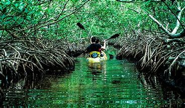

Baratang Island is a gateway to North & Middle Andaman District of Andaman & Nicobar Islands. This District is quite unexplored from the tourism point of view. This is one of best part of your trip to Andaman Islands because of its virgin beauty and natural wonders. In Baratang Island you can see Mud Volcano, mangrove and tropical forests, Limestone Caves, Parrot Island and one nice deserted beach at Baludera. Other offbeat beaches are also accessible from Baratang such as Merk Bay Beach in North Passage Island, Lalaji Bay Beach etc.
It is about 90 km away from Port Blair. Regular bus services are available from STS Bus Terminal, fare is for the government bus is Rs 80. The journey is in 2 phases - P.Blair to Jirkatang (40 kms, 1 hr 15 mins) and then Jirkatang to Baratang (49 kms, 1 hr 15 mins, no overtake zone through Jarwa Reserve Forest). From Nilambur Jetty at middle strait ferry services are available for Baratang Island. Ferry takes about 15 minutes to reach Baratang from Nilambur Jetty.
Click on 'Book' button for fill up the details so that you cant visit this place for tour!!!